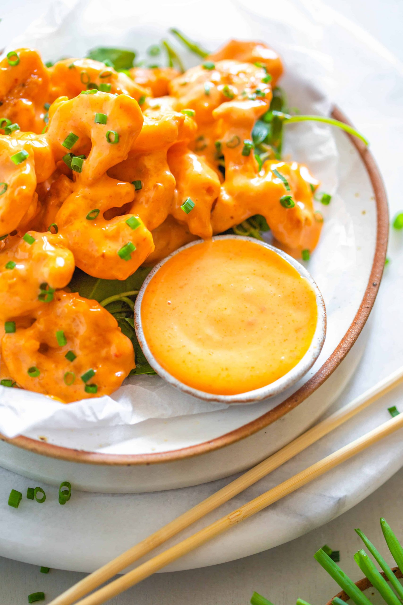

Dynamite Shrimp recipe

Dynamite Shrimp made with battered fried shrimp coated in a spicy mayo sauce is the PERFECT
recipe to serve as an appetizer or the main course!
Ingredients :
- 1 1/2 cups flour
- 3/4 cup cornstarch
- 1 1/2 tablespoons baking powder
- 1 1/2 cups cold club soda
- 1/2 teaspoon kosher salt
- 1/4 teaspoon white pepper
- canola oil for frying
- 1 pound shrimp deveined and shells removed 21-25 count
- 1 cup mayonnaise
- 1 tablespoon sugar
- 1 tablespoon sriracha
Intsructions :
- Heat a pot of oil to 375 degrees, at least 3 inches high
- Mix together the flour, cornstarch, baking powder, salt and pepper then dredge the shrimp in it and dust off the excess amount.
- Whisk the club soda into the flour mixture then dip the shrimp into it and fry them immediately until golden brown, about 2-3 minutes.
- Whisk together the mayonnaise, sugar and sriracha and toss with the freshly fried shrimp before serving.